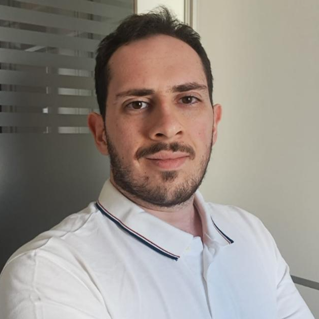

Quem sou eu
Enzo Sgrignolli
Psicólogo · CRP 06/208259
Sou Enzo Sgrignolli, psicólogo, e encontrei na psicologia uma forma de me aproximar das histórias, das relações e das diferentes maneiras que cada pessoa encontra para compreender a própria vida.
Para mim, fazer psicoterapia não significa oferecer respostas prontas ou ensinar alguém a viver. É construir, juntos, um espaço de escuta, reflexão e cuidado, onde seja possível olhar para aquilo que dói, compreender experiências e encontrar novas possibilidades de seguir em frente.

Minha trajetória
Nunca houve um planejamento ou sonho na vida antes da faculdade, o que me permitiu experienciar o curso como quase um completo mistério. Admito que foi um verdadeiro desafio. Comecei em 2016 e logo a incerteza me fez largar o curso. Retomei em 2017 e segui até 2019, quando a péssima gestão da unidade me levou a pedir transferência.
Foi no início do segundo semestre em que a pandemia da COVID-19 começou e todos tivemos que nos recolher em casa. A faculdade seguiu na modalidade EAD até o fim da quarentena, retornando à naturalidade (ou algo próximo do que um dia foi) na exata fase dos estágios.
Tornei-me psicólogo oficialmente em agosto de 2025, carregando a bagagem inicial dos estágios nas áreas institucional, organizacional, escolar e clínica. Talvez as paixões em potencial tenham nascido na reta final, quando considerei que meu caminho seria na área da educação. Mas antes seria necessário passar pela clínica para a busca e o desenvolvimento como profissional da psicologia.
Fiz minha primeira pós-graduação em 2026 na área de Psicopedagogia Clínica e Institucional, visando um futuro profissional na área educacional.